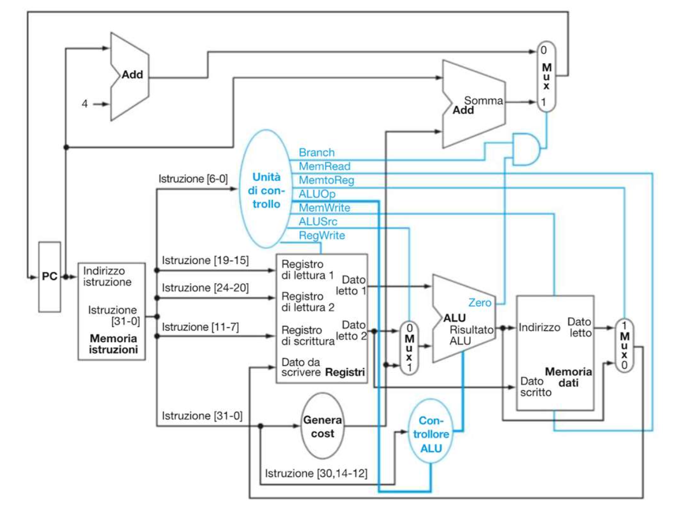

L'Architettura del Tempo
Costruzione della CPU
Le regole inflessibili su come il computer gestisce il tempo per evitare che i dati si accavallino o si corrompano, e gli elementi logici fondamentali per far scorrere il programma.
Il Ciclo Fetch, Decode, Execute
Ogni processore, dal più semplice microcontrollore al più potente Apple Silicon, esiste per fare una sola cosa: eseguire all'infinito un balletto diviso in tre movimenti (il Ciclo Macchina).
1. Fetch (Recupero)
La CPU guarda il Program Counter (PC) per sapere qual è l'indirizzo della prossima riga di codice da eseguire. Viaggia verso la Memoria Istruzioni a quell'indirizzo esatto e "pesca" (recupera) la parola a 32 bit che rappresenta l'istruzione in linguaggio macchina.
2. Decode (Decodifica)
Quei 32 bit vengono dati in pasto all'Unità di Controllo, che funge da traduttore. Li "fa a fette" per estrarre l'Opcode (cosa fare) e gli indirizzi dei registri coinvolti. Subito dopo, la CPU si affaccia sul Register File per leggere i dati contenuti in quei registri.
3. Execute (Esecuzione)
Con i dati e l'istruzione pronti, entra in scena l'azione reale: la ALU esegue il calcolo matematico, la Memoria Dati viene eventualmente aggiornata (se è una Store) o letta (se è una Load), e il risultato viene infine archiviato nel registro di destinazione.
La Gestione del Tempo
Per far funzionare il ciclo Fetch-Decode-Execute senza che l'elettricità si accavalli, serve una rigida "Costituzione". Questo testo definisce le regole assolute per la gestione del tempo in una CPU moderna.
1. Il Metronomo e la Macchina Fotografica (Edge-Triggered)
Nei sistemi sincroni, il Clock non è un interruttore che "accende" e "spegne" la CPU. È più simile al flash di una macchina fotografica. La tecnica edge-triggered (sensibile al fronte) significa che la memoria (i registri, i Flip-Flop) ignora tutto ciò che succede per il 99,9% del tempo. Accetta di memorizzare un nuovo dato solo ed esclusivamente nell'istante infinitesimale in cui il segnale di clock scatta verso l'alto (fronte di salita). Nel resto del tempo, i registri sono chiusi a chiave.
2. La Regola della Posa (Dato stabile)
Siccome il registro scatta la fotografia in un nanosecondo esatto (il fronte di salita), tutto deve essere pronto prima di quel momento. I segnali elettrici ci mettono un po' di tempo a viaggiare nei fili e ad attraversare le porte logiche (si creano dei picchi e delle fluttuazioni di corrente). Se il fronte di clock arriva mentre il segnale elettrico sta ancora "ballando" tra 0 e 1, il registro memorizzerà un dato corrotto. La regola è: quando arriva il fronte di salita, il dato deve essere già fermo e stabile sulla porta d'ingresso.
3. La Magia: Leggere e Scrivere nello stesso momento
Questo è il vero superpotere spiegato nel testo, e si ricollega esattamente a quello che ci dicevamo prima sui Multiplexer! Immagina l'istruzione: ADD x1, x1, x2 (Prendi x1, sommaci x2, e salva il risultato di nuovo in x1). Come fa la CPU a leggere da x1 e sovrascrivere x1 nello stesso ciclo senza far esplodere tutto?
- La Lettura è asincrona (continua): All'inizio del ciclo di clock, i MUX "leggono" il vecchio valore di
x1istantaneamente e lo mandano alla calcolatrice (ALU). - Il Calcolo prende tempo: La calcolatrice fa la somma. I segnali elettrici viaggiano e il nuovo risultato arriva davanti alla porta d'ingresso del registro
x1. - La Scrittura è istantanea (fronte di salita): Alla fine del ciclo, arriva il "flash" del clock. Solo in quel preciso istante il registro
x1si apre e memorizza il nuovo risultato.
Visto che la scrittura avviene solo in quell'istante finale, il vecchio dato ha avuto tutto il tempo di essere letto e usato in sicurezza durante il ciclo.
4. Il Limite di Velocità (La durata del ciclo)
Questa riga spiega perché non possiamo avere processori a 100 GHz. La durata di un ciclo di clock (la distanza tra due "flash") deve essere per forza più lunga del percorso più lento all'interno della CPU. Se l'elettricità ci mette 2 nanosecondi per uscire dal registro, attraversare i MUX, farsi sommare dalla ALU e tornare all'ingresso del registro, il ciclo di clock deve durare almeno 2 nanosecondi. Se facessi battere il clock più velocemente (es. ogni 1 nanosecondo), il registro scatterebbe la "fotografia" quando l'elettricità è ancora a metà strada, memorizzando spazzatura.
Elementi Fondamentali
Per costruire materialmente le basi di questa autostrada di dati (il Datapath), la CPU fa affidamento su tre componenti essenziali che gestiscono le primissime fasi del ciclo.
1. Program Counter (PC)
È il "dito che segue la riga" nel libro. Il PC è un registro speciale a 32 bit che memorizza l'indirizzo dell'istruzione che la CPU deve eseguire. Ad ogni colpo di clock (fronte di salita), il PC si aggiorna istantaneamente per puntare alla riga di codice successiva o a un salto.
2. Memoria Istruzioni
È la cassaforte dove risiede il tuo programma compilato. Riceve in ingresso in modo continuo l'indirizzo proveniente dal Program Counter e "sputa" fuori sul bus i 32 bit di quell'istruzione, pronti per essere passati all'Unità di Controllo per la decodifica.
3. L'Adder (Sommatore)
È una minuscola calcolatrice specializzata. A differenza della mastodontica ALU che può fare di tutto, l'Adder fa una sola cosa: l'addizione pura. Il suo scopo principale è calcolare all'istante l'indirizzo della prossima istruzione (facendo PC + 4) senza sprecare il prezioso tempo dell'ALU.
Approfondimento: Dove vivono fisicamente le istruzioni?
Sappiamo che le istruzioni di un programma risiedono nella famosa sezione .text. Ma attenzione: dire .text non significa automaticamente dire "RAM"! Il termine .text indica semplicemente la porzione del programma che contiene le istruzioni macchina. Il flusso logico è sempre lo stesso:
Il PC fornisce l'indirizzo (es. 0x00000000 per l'istruzione 0, 0x00000004 per l'istruzione 1, e così via). La Instruction Memory prende quell'indirizzo e restituisce l'istruzione corrispondente. Ma dove si trova fisicamente questa memoria? Tutto dipende dall'architettura del sistema:
Architettura Harvard
Nell'architettura Harvard, istruzioni e dati sono tenuti rigorosamente separati in due memorie fisicamente distinte. Il processore ha due percorsi isolati: uno per leggere la .text (Instruction Memory) e uno per la lettura/scrittura di variabili e stack (Data Memory).
Il Datapath del RISC-V che vedi negli schemi seguenti è disegnato esattamente così: a sinistra c'è la memoria istruzioni, a destra la memoria dati. È un approccio molto usato a scopo didattico e nei microcontrollori perché evita "ingorghi", permettendo di leggere un'istruzione e accedere a un dato in memoria contemporaneamente e in modo ordinato.
Architettura Von Neumann
Nei computer "normali" si usa l'architettura Von Neumann, dove istruzioni e dati coabitano nella stessa immensa RAM. L'unica memoria principale contiene sia la sezione .text che le sezioni dei dati (.data, stack, heap).
Quando avvii un programma dal disco, il sistema operativo lo carica in RAM, marcando la porzione .text come "read-only ed executable" per evitare modifiche accidentali. Di conseguenza, il processore leggerà sia le istruzioni col PC, sia le variabili con la ALU, attingendo dallo stesso blocco di RAM principale.
Nel circuito logico reale che hai costruito, l'Instruction Memory è fisicamente composta da 4 chip EEPROM indipendenti. Perché quattro? Perché una singola EEPROM restituisce solo 8 bit di dati alla volta. Poiché un'istruzione RISC-V è lunga 32 bit, hai dovuto affiancare 4 EEPROM (
4 chip × 8 bit = 32 bit) per comporre la parola intera ad ogni colpo di clock!(EEPROM 1 = bit 0-7, EEPROM 2 = bit 8-15, ecc).
In conclusione: La Instruction Memory è il componente logico da cui il PC legge la sezione
.text. In un'architettura Harvard (o nel tuo circuito didattico) è una memoria fisicamente separata (es. ROM/EEPROM); in un'architettura Von Neumann (come un PC moderno), istruzioni e dati condividono la stessa RAM fisica.
I Datapath Completi
Uniamo i pezzi e guardiamo come l'elettricità attraversa la CPU durante l'esecuzione: dall'avanzamento del PC fino ai percorsi seguiti per i calcoli, le letture in memoria (Load) e i salti (Branch).
1. L'Avanzamento del PC
⚙️ Il Controllo della ALU a Due Livelli
S31Il controllo della ALU è organizzato a due livelli per rendere il circuito più semplice e modulare.
1. I 4 bit di comando (L'obiettivo)
La ALU riceve un segnale fisso a 4 bit (Operazione ALU) che accende fisicamente il circuito interno:
0000: esegue un AND logico.0001: esegue un OR logico.0010: esegue una somma (add).0110: esegue una sottrazione (sub).
2. Il controllo a due livelli
Invece di generare questi 4 bit dalla Control Unit principale, si usa un piccolo Controllore ALU che riceve informazioni da due fonti:
- Dall'Unità di Controllo principale: riceve un segnale di soli 2 bit chiamato
ALUOp. - Dall'istruzione stessa: va a leggere i bit dei campi
funct3(bit 14-12) efunct7(bit 30) dell'istruzione in corso.
3. Come funziona il segnale ALUOp (I 2 bit magici)
L'Unità di Controllo principale dà una prima "macro-indicazione" tramite i 2 bit di ALUOp basandosi solo sull'Opcode:
-
ALUOp = 00: "Fai una somma".
Usato per Load e Store, dove bisogna sommare Registro + Offset. I bit funct vengono ignorati. L'uscita è0010. -
ALUOp = 01: "Fai una sottrazione".
Usato per Branch if Equal (beq), dove il confronto avviene per sottrazione. I bit funct vengono ignorati. L'uscita è0110. -
ALUOp = 10: "Guarda l'istruzione!".
Usato per il Tipo R (add, sub, and, or). Il controllore ALU deve esaminarefunct3efunct7per tradurli nei famosi 4 bit finali.

🧠 La Control Unit Principale
S32Il "Regista" della CPU: come il processore decide quali percorsi attivare leggendo i 7 bit dell'Opcode.
1. I 9 Segnali di Controllo
Nello schema completo, l'Unità di Controllo deve pilotare esattamente 9 fili elettrici (segnali) per configurare i multiplexer e le memorie.
- Branch: Si attiva (1) solo per le istruzioni di salto (come
beq). - MemRead / MemWrite: Dicono alla RAM di aprirsi in lettura (
lw) o di scrivere un dato (sw). - MemtoReg: Il multiplexer finale. Se è 1 manda ai registri il dato della RAM (
lw); se è 0 manda il risultato della ALU (Tipo R). - ALUOp (2 bit): Il macro-comando per l'ALU. Dice se sommare, sottrarre o "guardare i bit funct".
- ALUSrc: Decide il secondo operando ALU. Se 0 usa il registro
rs2(Tipo R, Branch); se 1 usa la costante immediata (Load, Store). - RegWrite: Autorizza il Register File a salvare un dato nel registro
rdal fronte di clock (Tipo R, Load).
2. La Tabella di Verità: I 4 Casi Fondamentali
Caso 1: Formato R (add, sub)
- ALUSrc = 0 (usa due registri)
- MemtoReg = 0 (salva il risultato ALU)
- RegWrite = 1 (scrivi in
rd) - MemRead/Write = 0 (RAM spenta)
- Branch = 0
- ALUOp = 10 (guarda i bit funct per l'operazione esatta)
Caso 2: Load Word (lw)
- ALUSrc = 1 (usa l'offset per l'indirizzo)
- MemtoReg = 1 (salva il dato della RAM)
- RegWrite = 1 (scrivi in
rd) - MemRead = 1 (leggi la RAM)
- MemWrite / Branch = 0
- ALUOp = 00 (somma per calcolare l'indirizzo)
Caso 3: Store Word (sw)
- ALUSrc = 1 (usa l'offset per l'indirizzo)
- RegWrite = 0 (NON scrivere nei registri)
- MemtoReg = X (indifferente, tanto RegWrite è 0)
- MemWrite = 1 (scrivi nella RAM)
- MemRead / Branch = 0
- ALUOp = 00 (somma per calcolare l'indirizzo)
Caso 4: Branch (beq)
- ALUSrc = 0 (confronta due registri)
- RegWrite = 0 (NON scrivere nei registri)
- MemtoReg = X (indifferente)
- MemRead/Write = 0 (RAM spenta)
- Branch = 1 (attiva la porta AND col flag Zero)
- ALUOp = 01 (forza una sottrazione per il confronto)